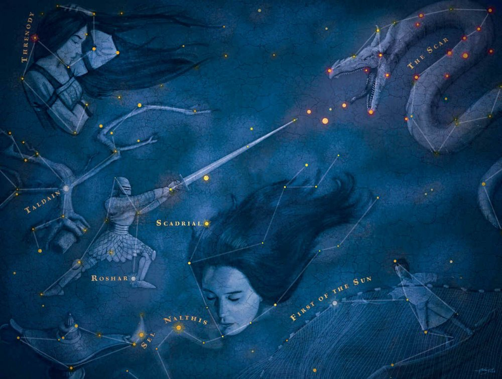

Bienvenido al Cosmere
El Cosmere es el universo ficticio en el que transcurren varias de las sagas de fantasía escritas por Brandon Sanderson. Aunque las historias se desarrollan en diferentes planetas, todos existen dentro de la misma galaxia y comparten una cosmología y un mito de la creación comunes.
Estructura del Universo
Todo en el Cosmere existe en tres reinos:
- Reino Físico: Es donde se encuentran los planetas y donde ocurren las historias principales. Las leyes físicas como la gravedad son similares a las nuestras.
- Reino Cognitivo (Shadesmar): Es el reino del pensamiento. El espacio está comprimido en este reino, lo que permite a ciertos personajes, conocidos como "saltamundos" (worldhoppers), viajar entre los diferentes planetas del Cosmere.
- Reino Espiritual: Existe más allá del tiempo y el espacio.
El Origen y la Magia
Originalmente, existía una fuerza o ser llamado Adonalsium, a menudo conocido como el poder de la creación. Adonalsium se fragmentó en dieciséis "Esquirlas" (Shards). Dieciséis personas tomaron estas Esquirlas, convirtiéndose en seres divinos con un "Propósito" específico que representa una faceta de Adonalsium. La magia en cada mundo del Cosmere se deriva del poder de estas Esquirlas.
Explora las diferentes sagas, personajes y mundos que componen este fascinante universo.